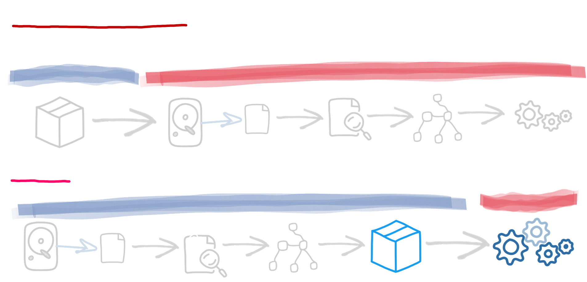
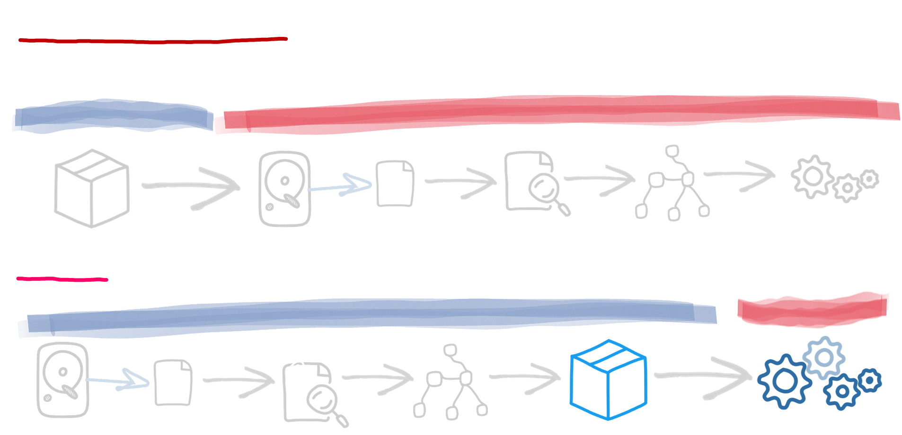

Quarkus is engineered to be efficient by using build-time optimizations and a reactive core to achieve fast startup times, high throughput, low response latency, reduced memory footprint, and minimal resource consumption. As a result, Quarkus is fast... real fast.
Starting fast by doing less: the build-time principle
Quarkus redefines how Java applications are built and executed by shifting much of the work to the build phase ensuring that the costly work happens only once — during the build process — not at every startup. It results in faster, smaller, and more resource-efficient Java applications on both GraalVM native images and traditional JVM deployments.
For example, at build time, Quarkus reads part of the application configuration, scans the classpath for annotated classes, and constructs a model of the application. By doing this early, Quarkus has enough information to eliminate unnecessary components and compute the exact startup instructions required.
 

This build-time optimization offers several key benefits:
- Reduced startup time: Quarkus performs most of the heavy work at build-time, significantly cutting startup time and allowing the app to reach peak performance faster.
- Lower memory consumption: By minimizing allocations and class loading, Quarkus reduces memory usage. Replacing reflection with build-time bytecode generation further lowers the JVM's runtime workload.
- Better latency and improved throughput: Quarkus generates highly optimized code at build time and prunes unnecessary classes and methods. For instance, it weaves layers of indirection together, enabling better JIT optimizations. These improvements result in faster code and better latency.